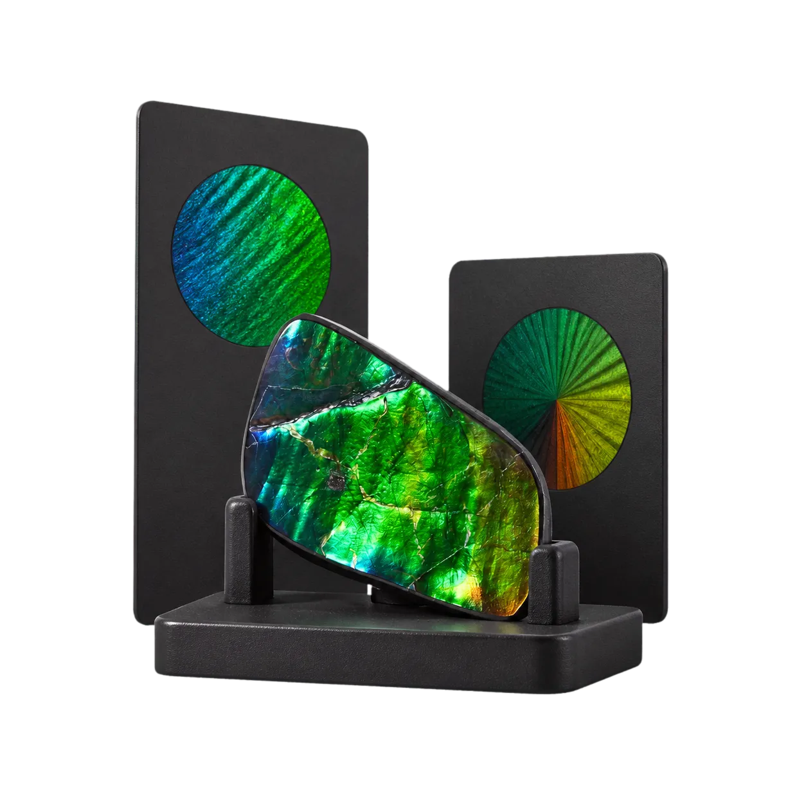
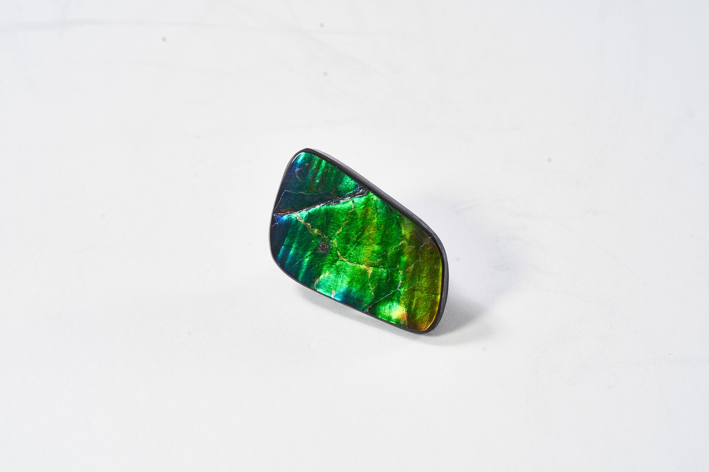
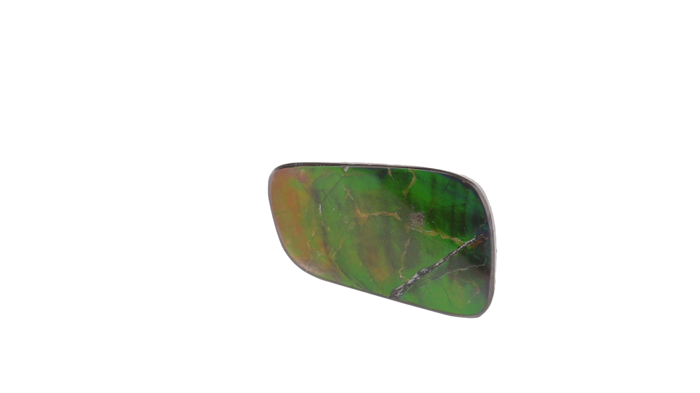

AAPOAKGY · Self-created commerce brand
From brand to checkout.
I created AAPOAKGY, from its name and brand design to the product catalogue, website and checkout. My work covered product structure, functional flows and interface design.
Explore the screen-flow library
The product challenge
Ammolite is visually compelling but difficult to buy with confidence online. Every specimen is unique; colour shifts with viewing angle; technical attributes matter; and a premium price asks for more evidence than a conventional product card can give. The experience needed to educate without overwhelming and sell without reducing each stone to decoration.
Visit the live product →Forming the brand
Naming and brand direction
I developed the name and brand around discovery, rarity and ammolite's changing appearance. This guided the tone of voice, restrained visuals and balance between scientific detail and premium presentation.
Turn uniqueness into a product model
The catalogue treats each specimen as an individual product with its own imagery, availability and attributes. I set up browsing by colour, product type, application and destiny, with comparable details that keep the natural differences between pieces visible.
Make evaluation possible online
Product detail combines still photography, gallery views and a 360-degree turntable with dimensions, weight, origin, colour distribution and certification information. The sequence moves from visual attraction to progressively deeper evidence so a customer can decide how much detail they need.
Designing the commerce system
Connect discovery to decision
I designed the information architecture from education and filtered browsing through product detail, favourites and direct enquiry. The flow preserves the emotional draw of the material while making practical facts easy to locate and compare.
Checkout and order history
I defined the functional journey through bag, delivery, payment, confirmation and order history. The checkout supports credit card, PayPal and AlipayHK, while preserving the identity of the exact one-off specimen the customer selected.
Availability and return visits
I planned availability, favourites, related products, guest continuity and member order history together. Customers could return to a favourite, find related pieces or review an earlier order while considering a purchase.
Showing the exact specimen
Each view lets customers inspect the stone and reduces uncertainty before checkout.


My contribution
- Brand and product: I developed the brand name, product formulation, experience strategy and interface together
- Product information: I turned the details of one-off inventory, colour distribution, physical attributes and certification into product information customers could use
- Commerce: the discovery, evaluation, purchase and post-purchase flows all support confidence in the exact specimen selected